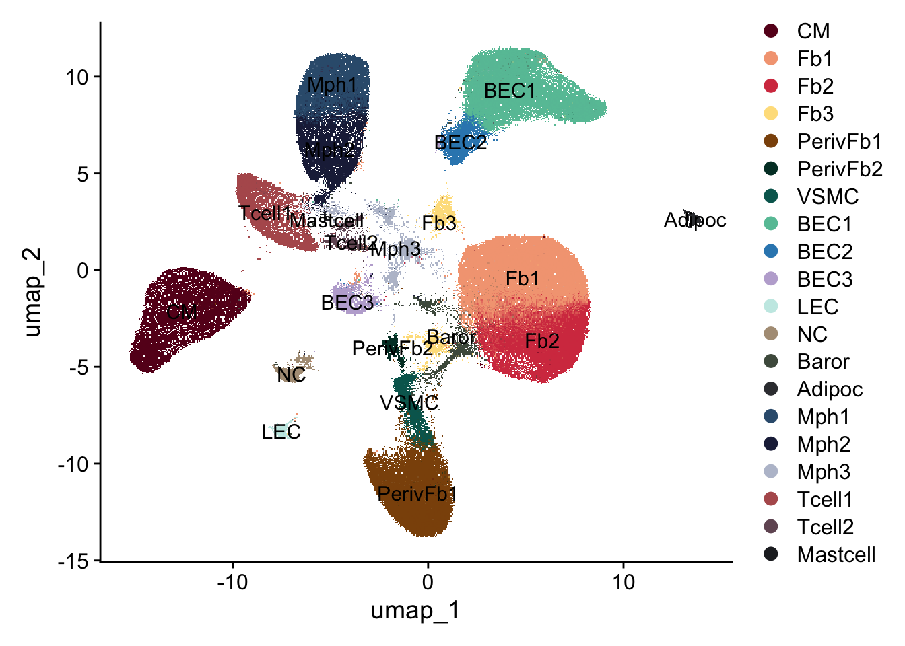
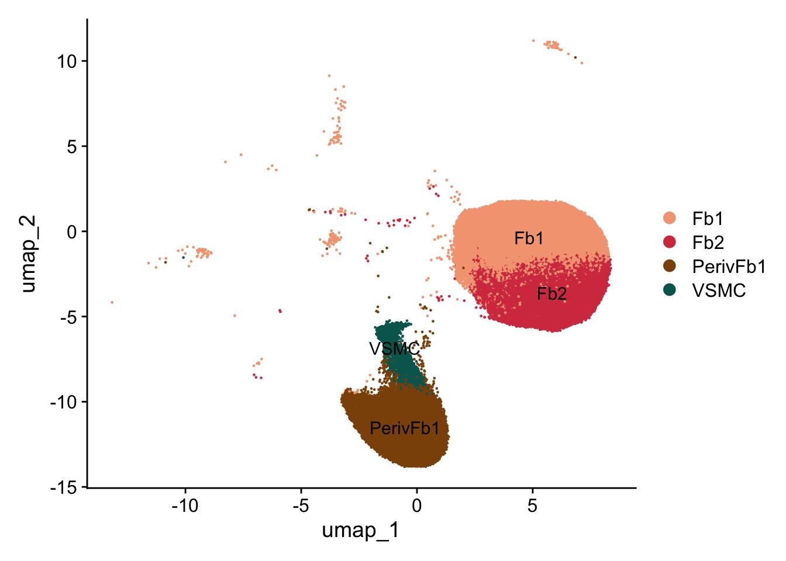
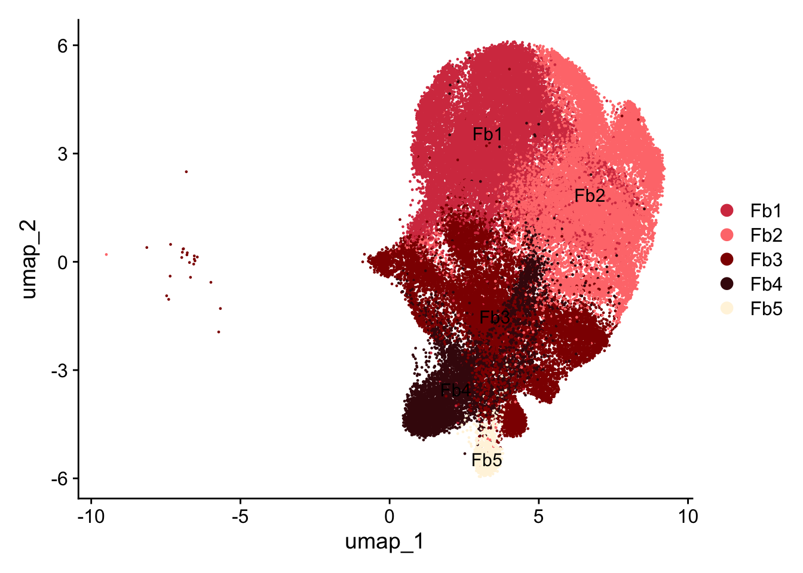
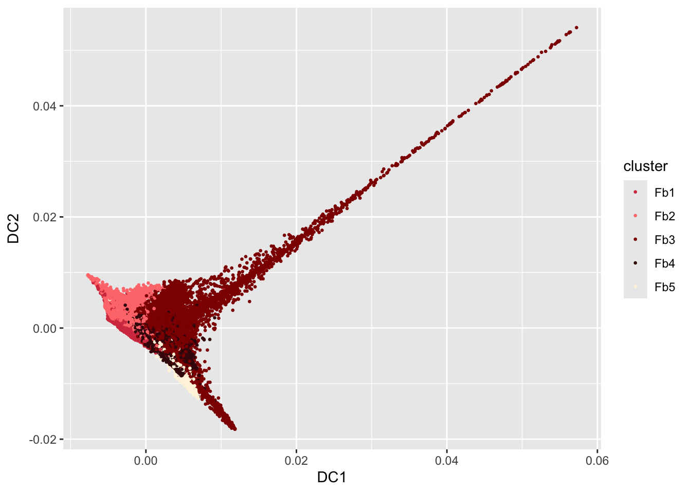
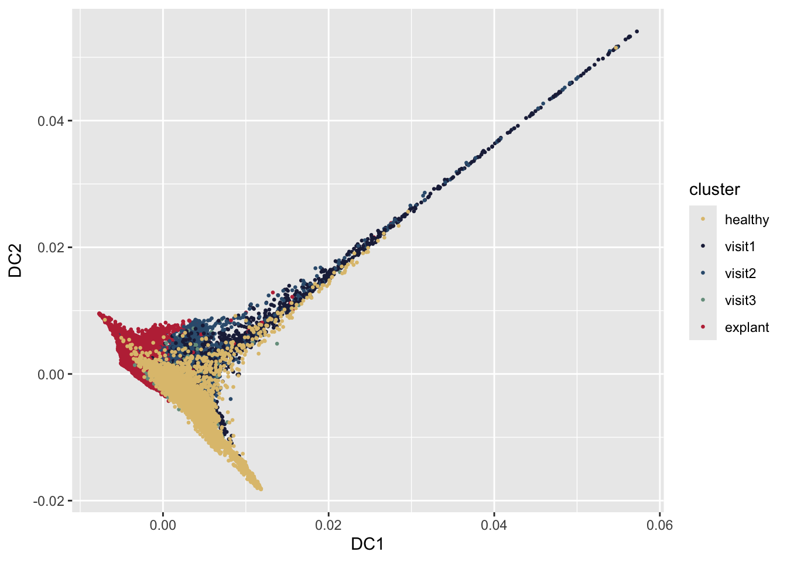

Fbhighres
A.DeMartin
2025-04-16
Last updated: 2025-07-24
Checks: 5 2
Knit directory: HumanHeartCarTrans2/
This reproducible R Markdown analysis was created with workflowr (version 1.7.1). The Checks tab describes the reproducibility checks that were applied when the results were created. The Past versions tab lists the development history.
The R Markdown file has unstaged changes. To know which version of
the R Markdown file created these results, you’ll want to first commit
it to the Git repo. If you’re still working on the analysis, you can
ignore this warning. When you’re finished, you can run
wflow_publish to commit the R Markdown file and build the
HTML.
Great job! The global environment was empty. Objects defined in the global environment can affect the analysis in your R Markdown file in unknown ways. For reproduciblity it’s best to always run the code in an empty environment.
The command set.seed(20250218) was run prior to running
the code in the R Markdown file. Setting a seed ensures that any results
that rely on randomness, e.g. subsampling or permutations, are
reproducible.
Great job! Recording the operating system, R version, and package versions is critical for reproducibility.
Nice! There were no cached chunks for this analysis, so you can be confident that you successfully produced the results during this run.
Using absolute paths to the files within your workflowr project makes it difficult for you and others to run your code on a different machine. Change the absolute path(s) below to the suggested relative path(s) to make your code more reproducible.
| absolute | relative |
|---|---|
| /Users/immbio/Desktop/Project/Angelina/HumanHeartCarTrans2/data/Human_heart_allmerged_seurat.rds | data/Human_heart_allmerged_seurat.rds |
| /Users/immbio/Desktop/Project/Angelina/HumanHeartCarTrans2/data/Human_heart_AllFb.rds | data/Human_heart_AllFb.rds |
| /Users/immbio/Desktop/Project/Angelina/HumanHeartCarTrans2/data/markerGenesAllFb_clusterNameAllFb | data/markerGenesAllFb_clusterNameAllFb |
| /Users/immbio/Desktop/Project/Angelina/HumanHeartCarTrans2/data/Human_heart_IntFb.rds | data/Human_heart_IntFb.rds |
Great! You are using Git for version control. Tracking code development and connecting the code version to the results is critical for reproducibility.
The results in this page were generated with repository version a9a9162. See the Past versions tab to see a history of the changes made to the R Markdown and HTML files.
Note that you need to be careful to ensure that all relevant files for
the analysis have been committed to Git prior to generating the results
(you can use wflow_publish or
wflow_git_commit). workflowr only checks the R Markdown
file, but you know if there are other scripts or data files that it
depends on. Below is the status of the Git repository when the results
were generated:
Ignored files:
Ignored: .DS_Store
Ignored: .Rhistory
Ignored: .Rproj.user/
Ignored: analysis/.DS_Store
Ignored: analysis/.Rhistory
Ignored: data/seurat files/
Untracked files:
Untracked: analysis/slingshotAllFb.Rmd
Untracked: analysis/slingshotIntFb.Rmd
Unstaged changes:
Modified: analysis/BMP_HGF.Rmd
Modified: analysis/Fbhighres.Rmd
Modified: analysis/Merge-QC-UMAPS.Rmd
Deleted: analysis/markerGenesRNAAllFb_snn_res.0.25
Deleted: analysis/markerGenesRNA_snn_res.0.4
Note that any generated files, e.g. HTML, png, CSS, etc., are not included in this status report because it is ok for generated content to have uncommitted changes.
These are the previous versions of the repository in which changes were
made to the R Markdown (analysis/Fbhighres.Rmd) and HTML
(docs/Fbhighres.html) files. If you’ve configured a remote
Git repository (see ?wflow_git_remote), click on the
hyperlinks in the table below to view the files as they were in that
past version.
| File | Version | Author | Date | Message |
|---|---|---|---|---|
| Rmd | a9a9162 | angeldemartin | 2025-07-02 | july02 |
| html | a9a9162 | angeldemartin | 2025-07-02 | july02 |
| Rmd | f1b5059 | angeldemartin | 2025-05-22 | may22 |
| html | f1b5059 | angeldemartin | 2025-05-22 | may22 |
load packages
load object
fileNam <- "/Users/immbio/Desktop/Project/Angelina/HumanHeartCarTrans2/data/Human_heart_allmerged_seurat.rds"
seuratM <- readRDS(fileNam)set color vectors
colclusterName <- c("#67001f", "#f4a582","#D53E4F", "#FEE08B","#8c510a","#003c30","#01665e","#66C2A5", "#3288BD","#BEAED4", "#c7eae5", "#B09C85", "#4e5a4c","#393A3F","#355C7D","#202547","#B45B5C","#725663FF","#232429","#bac1d1")
names(colclusterName) <- c("CM","Fb1","Fb2","Fb3","PerivFb1","PerivFb2","VSMC","BEC1","BEC2","BEC3","LEC","NC","Baror","Adipoc","Mph1","Mph2","Tcell1","Tcell2","Mastcell","Mph3")
coldiseaseCond <- c("#dfc27d","#BE3144","#202547","#355C7D","#779d8d")
names(coldiseaseCond) <- c("healthy", "explant", "visit1", "visit2", "visit3")## check umap
Idents(seuratM) <- seuratM$clusterName
DimPlot(seuratM, reduction = "umap", cols = colclusterName, label= TRUE)
subset Fb, PerivFb, VSMC (AllFb)
## subset Fb, PerivFb and VSMC
seuratAllFb <- subset(seuratM, idents = c("Fb1", "Fb2", "PerivFb1", "VSMC")) ## exclude Fb3 and PerivFb2 - int cells/doublets
levels(seuratAllFb)[1] "Fb1" "Fb2" "PerivFb1" "VSMC" table(seuratAllFb$orig.ident)
83263 table(seuratAllFb$clusterName)
Fb1 Fb2 PerivFb1 VSMC
34945 20185 24499 3634 DimPlot(seuratAllFb, reduction = "umap", cols = colclusterName, label=TRUE)
rerun seurat AllFb
## rerun seurat
seuratAllFb <- NormalizeData (object = seuratAllFb)
seuratAllFb <- FindVariableFeatures(object = seuratAllFb)
seuratAllFb <- ScaleData(object = seuratAllFb, verbose = TRUE)
seuratAllFb <- RunPCA(object=seuratAllFb, npcs = 30, verbose = FALSE)
seuratAllFb <- RunTSNE(object=seuratAllFb, reduction="pca", dims = 1:20)
seuratAllFb <- RunUMAP(object=seuratAllFb, reduction="pca", dims = 1:20)
seuratAllFb <- FindNeighbors(object = seuratAllFb, reduction = "pca", dims= 1:20)
res <- c(0.25, 0.6, 0.8, 0.4)
for (i in 1:length(res)) {
seuratAllFb <- FindClusters(object = seuratAllFb, resolution = res[i], random.seed = 1234)
}
table(seuratAllFb$orig.ident)
table(seuratAllFb$RNA_snn_res.0.25)load file AllFb
fileNam <- "/Users/immbio/Desktop/Project/Angelina/HumanHeartCarTrans2/data/Human_heart_AllFb.rds"
seuratAllFb <- readRDS(fileNam)
table(seuratAllFb$dataset)
331571_3-5_20231012_Hu_nucseq_USZ_HTx001 331571_4-6_20231012_Hu_nucseq_USZ_HTx002
1792 1211
334131_01-1_20231103_Hu_nucseq_USZ_HTx002_RV 334131_02-2_20231103_Hu_nucseq_USZ_HTx003_LV
2352 1649
334131_03-3_20231103_Hu_nucseq_USZ_HTx004_RV 334131_04-4_20231106_Hu_nucseq_USZ_HTx003_RV
1917 1086
334131_05-5_20231106_Hu_nucseq_USZ_HTx004_LV 334131_06-6_20231106_Hu_nucseq_USZ_HTx005_RV
2667 1404
334131_07-7_20231107_Hu_nucseq_USZ_HTx005_LV 334131_08-8_20231107_Hu_nucseq_USZ_HTx006_RV
752 1190
334131_09-9_20231108_Hu_nucseq_USZ_HTx006_LV 334131_10-10_20231108_Hu_nucseq_USZ_HTx001_RV
2226 1395
336431_07-7_20231129_Hu_nucseq_USZ_HTx008_RV 336431_08-8_20231129_Hu_nucseq_USZ_EMB001_V1
2598 267
336431_09-9_20231129_Hu_nucseq_USZ_HTx008_LV 336431_10-10_20231129_Hu_nucseq_USZ_EMB005_V1
2168 451
336431_11-11_20231129_Hu_nucseq_USZ_EMB006_V1 336431_12-12_20231129_Hu_nucseq_USZ_EMB007_V1
299 685
336431_13-13_20231129_Hu_nucseq_USZ_EMB002_V1 336431_14-14_20231129_Hu_nucseq_USZ_EMB003_V1
403 886
336431_15-15_20231129_Hu_nucseq_USZ_EMB004_V1 340821_01-7_20240118_Hu_nucseq_USZ_EMB007_V2
445 689
340821_02-8_20240118_Hu_nucseq_USZ_EMB008_V2 340821_03-9_20240123_Hu_nucseq_USZ_EMB001_V3
323 37
340821_04-10_20240123_Hu_nucseq_USZ_EMB002_V3 340821_05-11_20240123_Hu_nucseq_USZ_EMB003_V3
239 80
340821_06-12_20240123_Hu_nucseq_USZ_EMB004_V3 340821_07-13_20240123_Hu_nucseq_USZ_EMB005_V3
295 1178
340821_08-14_20240123_Hu_nucseq_USZ_EMB006_V3 340821_09-15_20240123_Hu_nucseq_USZ_EMB007_V3
135 202
340821_10-16_20240123_Hu_nucseq_USZ_EMB008_V3 340821_11-17_20240123_Hu_nucseq_USZ_EMB008_V1
109 25
340821_12-18_20240123_Hu_nucseq_USZ_HTx007_RV 340821_13-19_20240123_Hu_nucseq_USZ_HTx007_LV
1876 1428
340831_1-1_20240118_Hu_nucseq_USZ_EMB001_V2 340831_2-2_20240118_Hu_nucseq_USZ_EMB002_V2
481 1155
340831_3-3_20240118_Hu_nucseq_USZ_EMB003_V2 340831_4-4_20240118_Hu_nucseq_USZ_EMB004_V2
140 280
340831_5-5_20240118_Hu_nucseq_USZ_EMB005_V2 340831_6-6_20240118_Hu_nucseq_USZ_EMB006_V2
231 492
347741_4-4_20240326_Hu_nucseq_USZ_HTx010_RV 347741_5-5_20240326_Hu_nucseq_USZ_HTx010_LV
899 1882
353921_01-1_20240515_Hu_nucseq_USZ_HTx011_RV 353921_02-2_20240515_Hu_nucseq_USZ_HTx011_LV
859 578
353921_03-3_20240515_Hu_nucseq_USZ_EMB011_V1 353921_04-4_20240515_Hu_nucseq_USZ_EMB011_V2
355 104
353921_05-5_20240515_Hu_nucseq_USZ_HTx012_RV 353921_06-6_20240515_Hu_nucseq_USZ_HTx012_LV
494 1299
353921_07-7_20240515_Hu_nucseq_USZ_EMB012_V1 353921_08-8_20240515_Hu_nucseq_USZ_EMB010_V3
299 237
353921_09-9_20240515_Hu_nucseq_USZ_HTx013_RV 353921_10-10_20240515_Hu_nucseq_USZ_HTx013_LV
597 802
353921_11-11_20240515_Hu_nucseq_USZ_EMB010_V1_1 353921_12-12_20240515_Hu_nucseq_USZ_EMB010_V1_2
420 110
353921_13-13_20240524_Hu_nucseq_USZ_HTx015_RV 353921_14-14_20240524_Hu_nucseq_USZ_EMB011_V3
1060 304
353921_15-15_20240524_Hu_nucseq_USZ_EMB012_V2 353921_17-17_20240524_Hu_nucseq_USZ_HTx015_LV
1075 1049
353921_18-18_20240524_Hu_nucseq_USZ_EMB013_V1 353921_19-19_20240524_Hu_nucseq_USZ_EMB013_V2
144 65
353921_20-20_20240524_Hu_nucseq_USZ_EMB013_V3 353921_21-21_20240524_Hu_nucseq_USZ_HTx014_RV
94 1764
353921_22-22_20240524_Hu_nucseq_USZ_HTx014_LV 353921_23-23_20240524_Hu_nucseq_USZ_EMB014_V1
1619 403
353921_24-24_20240524_Hu_nucseq_USZ_EMB014_V2 359861_01-1_20240715_Hu_nucseq_USZ_HTx016_LV
172 3900
359861_02-2_20240715_Hu_nucseq_USZ_HTx016_RV 359861_03-3_20240715_Hu_nucseq_USZ_EMB014_V3
4775 199
359861_04-4_20240715_Hu_nucseq_USZ_EMB015_V1 359861_05-5_20240715_Hu_nucseq_USZ_EMB015_V2
42 41
359861_06-6_20240715_Hu_nucseq_USZ_EMB015_V3 359861_07-7_20240715_Hu_nucseq_USZ_EMB016_V1
255 275
359861_08-8_20240715_Hu_nucseq_USZ_EMB016_V2 359861_18-10_20240730_Hu_nucseq_USZ_EMB016_V3
36 136
373291_14-6_20241212_Hu_nucseq_USZ_HTx018_expRV 373291_15-7_20241212_Hu_nucseq_USZ_HTx018_expLV
159 212
373291_16-8_20241212_Hu_nucseq_USZ_HTx018_V1 373291_17-9_20241212_Hu_nucseq_USZ_HTx018_V2
20 55
373291_18-10_20241212_Hu_nucseq_USZ_HTx018_V3 o28576_1_08-8_20220525_Hu_nucseq_Graz_8_HH_GEM
7 1872
o28576_1_10-10_20220525_Hu_nucseq_Graz_10_HH_GEM o28576_1_11-11_20220525_Hu_nucseq_Graz_11_HH_GEM
1615 2065
o28576_1_12-12_20220525_Hu_nucseq_Graz_12_HH_GEM o292731_1-1_20220818_Hu_nucseq_Graz_9_HH_GEM
2176 3042
o292731_2-2_20220818_Hu_nucseq_Graz_13_HH_GEM o294781_01-1_20220912_Hu_nucseq_Graz_21_HH_GEM
4846 888
o294781_02-2_20220912_Hu_nucseq_Graz_22_HH_GEM o294781_03-3_20220912_Hu_nucseq_Graz_23_HH_GEM
1046 403
o294781_04-4_20220912_Hu_nucseq_Graz_24_HH_GEM
1276 table(seuratAllFb$RNA_snn_res.0.25)
0 1 2 3 4 5 6 7
17372 16705 13608 13313 11627 6368 3164 1106 table(seuratAllFb$orig.ident)
83263 #### cluster_name_Fb
seuratAllFb$clusterNameAllFb <- "clusterNameAllFb"
seuratAllFb$clusterNameAllFb[which(seuratAllFb$RNA_snn_res.0.25 %in% "0" )] <- "Fb1"
seuratAllFb$clusterNameAllFb[which(seuratAllFb$RNA_snn_res.0.25 %in% "1" )] <- "Fb2"
seuratAllFb$clusterNameAllFb[which(seuratAllFb$RNA_snn_res.0.25 %in% "2" )] <- "Fb3"
seuratAllFb$clusterNameAllFb[which(seuratAllFb$RNA_snn_res.0.25 %in% "3" )] <- "PerivFb1"
seuratAllFb$clusterNameAllFb[which(seuratAllFb$RNA_snn_res.0.25 %in% "4" )] <- "PerivFb2"
seuratAllFb$clusterNameAllFb[which(seuratAllFb$RNA_snn_res.0.25 %in% "5" )] <- "Fb4"
seuratAllFb$clusterNameAllFb[which(seuratAllFb$RNA_snn_res.0.25 %in% "6" )] <- "VSMC"
seuratAllFb$clusterNameAllFb[which(seuratAllFb$RNA_snn_res.0.25 %in% "7" )] <- "Fb5"
table(seuratAllFb$clusterNameAllFb)
table(seuratAllFb$RNA_snn_res.0.25)
###order
Idents(seuratAllFb) <- seuratAllFb$clusterNameAllFb
seuratAllFb$clusterNameAllFb <- factor(seuratAllFb$clusterNameAllFb, levels=c("Fb1", "Fb2", "Fb3", "Fb4", "Fb5", "PerivFb1", "PerivFb2", "VSMC"))
Idents(seuratAllFb) <- seuratAllFb$clusterNameAllFb
table(seuratAllFb$clusterNameAllFb)### save seurat object
saveRDS(seuratAllFb, file="/Users/immbio/Desktop/Project/Angelina/HumanHeartCarTrans2/data/Human_heart_AllFb.rds")##set color vectors AllFb
colAllFb <- c("#D53E4F","#f4a582","#ff7b7b","#8e0b00","#FEE08B","#42090D","#FF7B00","#FFF4DF")
names(colAllFb) <- c("Fb1","PerivFb1","Fb2","Fb3","VSMC","Fb4","PerivFb2", "Fb5")umaps
Idents(seuratAllFb) <- seuratAllFb$RNA_snn_res.0.25
DimPlot(seuratAllFb, reduction = "umap", pt.size = 0.5, label = TRUE)
Idents(seuratAllFb) <- seuratAllFb$clusterName
DimPlot(seuratAllFb, reduction = "umap", pt.size = 0.5, cols = colclusterName, label = TRUE)
Idents(seuratAllFb) <- seuratAllFb$clusterNameAllFb
DimPlot(seuratAllFb, reduction = "umap", pt.size = 0.5, cols = colAllFb, label = TRUE)
DimPlot(seuratAllFb, reduction = "umap", pt.size = 0.5, cols = colAllFb) + theme(legend.position = "null")
Idents(seuratAllFb) <- seuratAllFb$diseaseCond
DimPlot(seuratAllFb, reduction = "umap", pt.size = 0.5, cols = coldiseaseCond, shuffle= TRUE)
DimPlot(seuratAllFb, reduction = "umap", pt.size = 0.5, cols = coldiseaseCond, shuffle = TRUE) + theme(legend.position = "null") ## calculate cluster marker genes AllFb
## calculate cluster marker genes AllFb
## cluster marker
Idents(seuratAllFb) <- seuratAllFb$clusterNameAllFb
markerGenes <- FindAllMarkers(seuratAllFb, only.pos=T) %>%
dplyr::filter(p_val_adj < 0.01)
## save table
write.table(markerGenes,
file= "/Users/immbio/Desktop/Project/Angelina/HumanHeartCarTrans2/data/markerGenesAllFb_clusterNameAllFb",
sep="\t",
quote=F,
row.names=F,
col.names=T)BMP features
genes <- data.frame(gene=rownames(seuratAllFb)) %>%
mutate(geneID=gsub("^.*\\.", "", gene))
selGenes <- data.frame(geneID=c("HGF", "MET", "GREM1", "GREM2", "BMPR1A", "BMPR2", "BMP2K", "BMP8A", "BMP1", "BMP6", "BMP2", "BMP5", "BMP4")) %>%
left_join(., genes, by="geneID")
pList <- sapply(selGenes$gene, function(x){
p <- FeaturePlot(seuratAllFb, features = x,
reduction = "umap", pt.size = 0.1,
cols = c("lightgrey", "#BE3144"),
raster = FALSE) +
theme(legend.position="right")
plot(p)
})


 ### BMP featuresb ordered
### BMP featuresb ordered
genes <- data.frame(gene=rownames(seuratAllFb)) %>%
mutate(geneID=gsub("^.*\\.", "", gene))
selGenes <- data.frame(geneID=c("HGF", "MET", "GREM1", "GREM2", "BMPR1A", "BMPR2", "BMP2K", "BMP8A", "BMP1", "BMP6", "BMP2", "BMP5", "BMP4")) %>%
left_join(., genes, by="geneID")
pList <- sapply(selGenes$gene, function(x){
p <- FeaturePlot(seuratAllFb, features = x,
reduction = "umap", pt.size = 0.1,
cols = c("lightgrey", "#BE3144"),
raster = FALSE,
order=TRUE) +
theme(legend.position="right")
plot(p)
})


BMP violin plots
Idents(seuratAllFb) <- seuratAllFb$diseaseCond
pList <- sapply(selGenes$gene, function(x){
p <- VlnPlot( object = seuratAllFb, features = x, pt.size = 1, cols=coldiseaseCond)
plot(p)
})


violin plots
Idents(seuratAllFb) <- seuratAllFb$diseaseCond
pList <- sapply(selGenes$gene, function(x){
p <- VlnPlot( object = seuratAllFb, features = x, pt.size = 0, cols=coldiseaseCond)
plot(p)
})


abundance plots
dataset
order_keywords <- c("HH", "RV|LV|expLV|expRV|331571_3-5_20231012_Hu_nucseq_USZ_HTx001|331571_4-6_20231012_Hu_nucseq_USZ_HTx002", "V1", "V2","V3")
files <- unique(seuratAllFb$dataset)
ordered_files <- c()
for (key in order_keywords) {
ordered_files <- c(ordered_files, files[grepl(key, files)])
}
###dataset
datList <- NULL
for(con in unique(seuratAllFb$dataset)){
seuratSub <- subset(seuratAllFb, dataset==con)
print(dim(seuratSub))
dat_con <- as.data.frame(table(seuratSub$clusterNameAllFb)) %>%
mutate(percent=Freq/ncol(seuratSub)) %>% mutate(dataset=con)
datList[[con]] <- dat_con
}[1] 45337 1792
[1] 45337 1211
[1] 45337 2352
[1] 45337 1649
[1] 45337 1917
[1] 45337 1086
[1] 45337 2667
[1] 45337 1404
[1] 45337 752
[1] 45337 1190
[1] 45337 2226
[1] 45337 1395
[1] 45337 2598
[1] 45337 267
[1] 45337 2168
[1] 45337 451
[1] 45337 299
[1] 45337 685
[1] 45337 403
[1] 45337 886
[1] 45337 445
[1] 45337 689
[1] 45337 323
[1] 45337 37
[1] 45337 239
[1] 45337 80
[1] 45337 295
[1] 45337 1178
[1] 45337 135
[1] 45337 202
[1] 45337 109
[1] 45337 25
[1] 45337 1876
[1] 45337 1428
[1] 45337 481
[1] 45337 1155
[1] 45337 140
[1] 45337 280
[1] 45337 231
[1] 45337 492
[1] 45337 899
[1] 45337 1882
[1] 45337 859
[1] 45337 578
[1] 45337 355
[1] 45337 104
[1] 45337 494
[1] 45337 1299
[1] 45337 299
[1] 45337 237
[1] 45337 597
[1] 45337 802
[1] 45337 420
[1] 45337 110
[1] 45337 1060
[1] 45337 304
[1] 45337 1075
[1] 45337 1049
[1] 45337 144
[1] 45337 65
[1] 45337 94
[1] 45337 1764
[1] 45337 1619
[1] 45337 403
[1] 45337 172
[1] 45337 3900
[1] 45337 4775
[1] 45337 199
[1] 45337 42
[1] 45337 41
[1] 45337 255
[1] 45337 275
[1] 45337 36
[1] 45337 136
[1] 45337 159
[1] 45337 212
[1] 45337 20
[1] 45337 55
[1] 45337 7
[1] 45337 1872
[1] 45337 1615
[1] 45337 2065
[1] 45337 2176
[1] 45337 3042
[1] 45337 4846
[1] 45337 888
[1] 45337 1046
[1] 45337 403
[1] 45337 1276dat_all <- do.call("rbind", datList)
## plot abundance
ggbarplot(dat_all, x= "dataset", y= "percent", fill = "Var1", palette = colAllFb, legend = "right", legend.titel = "cluster", ylab = "frequency") + theme(axis.text.x = element_text(angle = 90, vjust = 0.5, hjust=1)) + scale_x_discrete(limits=ordered_files)
patient_diseaseCond
order_keywords <- c("healthy", "visit1", "visit2", "visit3", "explant")
files <- unique(seuratAllFb$patient_diseaseCond)
ordered_files <- c()
for (key in order_keywords) {
ordered_files <- c(ordered_files, files[grepl(key, files)])
}
###patient_diseaseCond
datList <- NULL
for(con in unique(seuratAllFb$patient_diseaseCond)){
seuratSub <- subset(seuratAllFb, patient_diseaseCond==con)
print(dim(seuratSub))
dat_con <- as.data.frame(table(seuratSub$clusterNameAllFb)) %>%
mutate(percent=Freq/ncol(seuratSub)) %>% mutate(patient_diseaseCond=con)
datList[[con]] <- dat_con
}[1] 45337 3187
[1] 45337 3563
[1] 45337 2735
[1] 45337 4584
[1] 45337 2156
[1] 45337 3416
[1] 45337 4766
[1] 45337 267
[1] 45337 451
[1] 45337 299
[1] 45337 685
[1] 45337 403
[1] 45337 886
[1] 45337 445
[1] 45337 689
[1] 45337 323
[1] 45337 37
[1] 45337 239
[1] 45337 80
[1] 45337 295
[1] 45337 1178
[1] 45337 135
[1] 45337 202
[1] 45337 109
[1] 45337 25
[1] 45337 3304
[1] 45337 481
[1] 45337 1155
[1] 45337 140
[1] 45337 280
[1] 45337 231
[1] 45337 492
[1] 45337 2781
[1] 45337 1437
[1] 45337 355
[1] 45337 104
[1] 45337 1793
[1] 45337 299
[1] 45337 237
[1] 45337 1399
[1] 45337 420
[1] 45337 110
[1] 45337 2109
[1] 45337 304
[1] 45337 1075
[1] 45337 144
[1] 45337 65
[1] 45337 94
[1] 45337 3383
[1] 45337 403
[1] 45337 172
[1] 45337 8675
[1] 45337 199
[1] 45337 42
[1] 45337 41
[1] 45337 255
[1] 45337 275
[1] 45337 36
[1] 45337 136
[1] 45337 371
[1] 45337 20
[1] 45337 55
[1] 45337 7
[1] 45337 1872
[1] 45337 1615
[1] 45337 2065
[1] 45337 2176
[1] 45337 3042
[1] 45337 4846
[1] 45337 888
[1] 45337 1046
[1] 45337 403
[1] 45337 1276dat_all <- do.call("rbind", datList)
## plot abundance
ggbarplot(dat_all, x= "patient_diseaseCond", y= "percent", fill = "Var1", palette = colAllFb, legend = "right", legend.titel = "cluster", ylab = "frequency") + theme(axis.text.x = element_text(angle = 90, vjust = 0.5, hjust=1)) + scale_x_discrete(limits=ordered_files)
diseaseCond
orddiseaseCond <- c("healthy","visit1", "visit2" ,"visit3", "explant")
###diseaseCond
datList <- NULL
for(con in unique(seuratAllFb$diseaseCond)){
seuratSub <- subset(seuratAllFb, diseaseCond==con)
print(dim(seuratSub))
dat_con <- as.data.frame(table(seuratSub$clusterNameAllFb)) %>%
mutate(percent=Freq/ncol(seuratSub)) %>% mutate(diseaseCond=con)
datList[[con]] <- dat_con
}[1] 45337 49659
[1] 45337 5419
[1] 45337 5449
[1] 45337 3507
[1] 45337 19229dat_all <- do.call("rbind", datList)
## plot abundance
ggbarplot(dat_all, x= "diseaseCond", y= "percent", fill = "Var1", palette = colAllFb, legend = "right", legend.titel = "cluster", ylab = "frequency") + theme(axis.text.x = element_text(angle = 90, vjust = 0.5, hjust=1)) + scale_x_discrete(limits=orddiseaseCond)
subset IntFb
## subset IntFb
Idents(seuratAllFb) <- seuratAllFb$clusterNameAllFb
seuratIntFb <- subset(seuratAllFb, idents = c("Fb1", "Fb2", "Fb3", "Fb4", "Fb5"))
table(seuratIntFb$clusterNameAllFb)
Fb1 Fb2 Fb3 Fb4 Fb5
17372 16705 13608 6368 1106 DimPlot(seuratIntFb, reduction = "umap", cols = colAllFb, label=TRUE)
rerun seurat IntFb
## rerun seurat
seuratIntFb <- NormalizeData (object = seuratIntFb)
seuratIntFb <- FindVariableFeatures(object = seuratIntFb)
seuratIntFb <- ScaleData(object = seuratIntFb, verbose = TRUE)
seuratIntFb <- RunPCA(object=seuratIntFb, npcs = 30, verbose = FALSE)
seuratIntFb <- RunTSNE(object=seuratIntFb, reduction="pca", dims = 1:20)
seuratIntFb <- RunUMAP(object=seuratIntFb, reduction="pca", dims = 1:20)
seuratIntFb <- FindNeighbors(object = seuratIntFb, reduction = "pca", dims= 1:20)
res <- c(0.25, 0.6, 0.8, 0.4, 0.1)
for (i in 1:length(res)) {
seuratIntFb <- FindClusters(object = seuratIntFb, resolution = res[i], random.seed = 1234)
}
table(seuratIntFb$orig.ident)
table(seuratIntFb$RNA_snn_res.0.25)## clustername IntFb
seuratIntFb$clusterNameIntFb <- "clusterNameIntFb"
seuratIntFb$clusterNameIntFb[which(seuratIntFb$RNA_snn_res.0.1 %in% "0" )] <- "Fb1/2"
seuratIntFb$clusterNameIntFb[which(seuratIntFb$RNA_snn_res.0.1 %in% "1" )] <- "Fb3"
seuratIntFb$clusterNameIntFb[which(seuratIntFb$RNA_snn_res.0.1 %in% "2" )] <- "Fb4"
seuratIntFb$clusterNameIntFb[which(seuratIntFb$RNA_snn_res.0.1 %in% "3" )] <- "Fb5"
table(seuratIntFb$clusterNameIntFb)
table(seuratIntFb$RNA_snn_res.0.1)
## order
Idents(seuratIntFb) <- seuratIntFb$clusterNameIntFb
seuratIntFb$clusterNameIntFb <- factor(seuratIntFb$clusterNameIntFb, levels=c("Fb1/2", "Fb3", "Fb4", "Fb5"))
Idents(seuratIntFb) <- seuratIntFb$clusterNameIntFb
table(seuratIntFb$clusterNameIntFb)### save seurat object
saveRDS(seuratIntFb, file="/Users/immbio/Desktop/Project/Angelina/HumanHeartCarTrans2/data/Human_heart_IntFb.rds")load file IntFb
fileNam <- "/Users/immbio/Desktop/Project/Angelina/HumanHeartCarTrans2/data/Human_heart_IntFb.rds"
seuratIntFb <- readRDS(fileNam)
table(seuratIntFb$clusterNameIntFb, seuratIntFb$diseaseCond)
healthy visit1 visit2 visit3 explant
Fb1/2 643 405 548 274 32433
Fb3 749 3744 3546 2398 2332
Fb4 6935 16 54 27 117
Fb5 924 7 2 5 0colIntFb <- c("#D53E4F","#8e0b00","#42090D","#FFF4DF")
names(colIntFb) <- c("Fb1/2","Fb3","Fb4", "Fb5")umaps
Idents(seuratIntFb) <- seuratIntFb$RNA_snn_res.0.1
DimPlot(seuratIntFb, reduction = "umap", pt.size = 0.5, label = TRUE)
Idents(seuratIntFb) <- seuratIntFb$clusterNameAllFb
DimPlot(seuratIntFb, reduction = "umap", pt.size = 0.5, cols = colAllFb, label = TRUE, shuffle = TRUE)
Idents(seuratIntFb) <- seuratIntFb$clusterNameIntFb
DimPlot(seuratIntFb, reduction = "umap", pt.size = 0.5, cols = colIntFb, label = TRUE, shuffle = TRUE)
Idents(seuratIntFb) <- seuratIntFb$diseaseCond
DimPlot(seuratIntFb, reduction = "umap", pt.size = 0.5, cols = coldiseaseCond, shuffle = TRUE)
diffusion map
pca_embeddings <- Embeddings(seuratIntFb, reduction = "pca")
dm <- DiffusionMap(pca_embeddings)
df <- data.frame(DC1 = eigenvectors(dm)[,1], DC2 = eigenvectors(dm)[,2])
## color according to clusterAllFb
df$cluster <- seuratIntFb$clusterNameAllFb
ggplot(df, aes(x = DC1, y = DC2, color = cluster)) +
geom_point(size = 0.5) +
scale_color_manual(values = colAllFb)
## color according to diseaseCond
df$cluster <- seuratIntFb$diseaseCond
ggplot(df, aes(x = DC1, y = DC2, color = cluster)) +
geom_point(size = 0.5) +
scale_color_manual(values = coldiseaseCond)
session info
date()[1] "Thu Jul 24 16:06:40 2025"sessionInfo()R version 4.4.0 (2024-04-24)
Platform: x86_64-apple-darwin20
Running under: macOS Ventura 13.7.6
Matrix products: default
BLAS: /Library/Frameworks/R.framework/Versions/4.4-x86_64/Resources/lib/libRblas.0.dylib
LAPACK: /Library/Frameworks/R.framework/Versions/4.4-x86_64/Resources/lib/libRlapack.dylib; LAPACK version 3.12.0
locale:
[1] en_US.UTF-8/en_US.UTF-8/en_US.UTF-8/C/en_US.UTF-8/en_US.UTF-8
time zone: Europe/Zurich
tzcode source: internal
attached base packages:
[1] grid stats4 stats graphics grDevices utils datasets methods base
other attached packages:
[1] NCmisc_1.2.0 VennDiagram_1.7.3 futile.logger_1.4.3
[4] ggupset_0.4.1 gridExtra_2.3 DOSE_3.30.5
[7] enrichplot_1.24.4 msigdbr_24.1.0 org.Hs.eg.db_3.19.1
[10] AnnotationDbi_1.66.0 clusterProfiler_4.12.6 multtest_2.60.0
[13] metap_1.12 scater_1.32.1 scuttle_1.14.0
[16] destiny_3.18.0 circlize_0.4.16 muscat_1.18.0
[19] viridis_0.6.5 viridisLite_0.4.2 lubridate_1.9.4
[22] forcats_1.0.0 stringr_1.5.1 purrr_1.0.4
[25] readr_2.1.5 tidyr_1.3.1 tibble_3.2.1
[28] tidyverse_2.0.0 dplyr_1.1.4 SingleCellExperiment_1.26.0
[31] SummarizedExperiment_1.34.0 Biobase_2.64.0 GenomicRanges_1.56.2
[34] GenomeInfoDb_1.40.1 IRanges_2.38.1 S4Vectors_0.42.1
[37] BiocGenerics_0.50.0 MatrixGenerics_1.16.0 matrixStats_1.5.0
[40] pheatmap_1.0.13 ggpubr_0.6.0 ggplot2_3.5.2
[43] Seurat_5.3.0 SeuratObject_5.1.0 sp_2.2-0
[46] runSeurat3_0.1.0 ExploreSCdataSeurat3_0.1.0
loaded via a namespace (and not attached):
[1] igraph_2.1.4 ica_1.0-3 plotly_4.10.4
[4] Formula_1.2-5 zlibbioc_1.50.0 tidyselect_1.2.1
[7] bit_4.6.0 doParallel_1.0.17 clue_0.3-66
[10] lattice_0.22-7 rjson_0.2.23 blob_1.2.4
[13] S4Arrays_1.4.1 pbkrtest_0.5.4 parallel_4.4.0
[16] png_0.1-8 plotrix_3.8-4 cli_3.6.5
[19] ggplotify_0.1.2 goftest_1.2-3 VIM_6.2.2
[22] variancePartition_1.34.0 BiocNeighbors_1.22.0 shadowtext_0.1.4
[25] uwot_0.2.3 curl_6.2.3 tidytree_0.4.6
[28] mime_0.13 evaluate_1.0.3 ComplexHeatmap_2.20.0
[31] stringi_1.8.7 backports_1.5.0 lmerTest_3.1-3
[34] qqconf_1.3.2 httpuv_1.6.16 magrittr_2.0.3
[37] rappdirs_0.3.3 splines_4.4.0 ggraph_2.2.1
[40] sctransform_0.4.2 ggbeeswarm_0.7.2 DBI_1.2.3
[43] jquerylib_0.1.4 smoother_1.3 withr_3.0.2
[46] git2r_0.36.2 corpcor_1.6.10 reformulas_0.4.1
[49] class_7.3-23 rprojroot_2.0.4 lmtest_0.9-40
[52] tidygraph_1.3.1 formatR_1.14 colourpicker_1.3.0
[55] htmlwidgets_1.6.4 fs_1.6.6 ggrepel_0.9.6
[58] labeling_0.4.3 fANCOVA_0.6-1 SparseArray_1.4.8
[61] DESeq2_1.44.0 ranger_0.17.0 DEoptimR_1.1-3-1
[64] reticulate_1.42.0 hexbin_1.28.5 zoo_1.8-14
[67] XVector_0.44.0 knitr_1.50 ggplot.multistats_1.0.1
[70] UCSC.utils_1.0.0 RhpcBLASctl_0.23-42 timechange_0.3.0
[73] foreach_1.5.2 patchwork_1.3.0 caTools_1.18.3
[76] knn.covertree_1.0 ggtree_3.12.0 data.table_1.17.4
[79] R.oo_1.27.1 RSpectra_0.16-2 irlba_2.3.5.1
[82] ggrastr_1.0.2 gridGraphics_0.5-1 fastDummies_1.7.5
[85] lazyeval_0.2.2 yaml_2.3.10 survival_3.8-3
[88] scattermore_1.2 crayon_1.5.3 RcppAnnoy_0.0.22
[91] RColorBrewer_1.1-3 progressr_0.15.1 tweenr_2.0.3
[94] later_1.4.2 ggridges_0.5.6 codetools_0.2-20
[97] GlobalOptions_0.1.2 aod_1.3.3 KEGGREST_1.44.1
[100] Rtsne_0.17 shape_1.4.6.1 limma_3.60.6
[103] pkgconfig_2.0.3 TMB_1.9.17 spatstat.univar_3.1-3
[106] mathjaxr_1.8-0 EnvStats_3.1.0 aplot_0.2.5
[109] scatterplot3d_0.3-44 ape_5.8-1 spatstat.sparse_3.1-0
[112] xtable_1.8-4 car_3.1-3 plyr_1.8.9
[115] httr_1.4.7 rbibutils_2.3 tools_4.4.0
[118] globals_0.18.0 beeswarm_0.4.0 broom_1.0.8
[121] nlme_3.1-168 lambda.r_1.2.4 assertthat_0.2.1
[124] lme4_1.1-37 digest_0.6.37 numDeriv_2016.8-1.1
[127] Matrix_1.7-3 farver_2.1.2 tzdb_0.5.0
[130] remaCor_0.0.18 reshape2_1.4.4 yulab.utils_0.2.0
[133] glue_1.8.0 cachem_1.1.0 polyclip_1.10-7
[136] generics_0.1.4 Biostrings_2.72.1 mvtnorm_1.3-3
[139] parallelly_1.45.0 mnormt_2.1.1 statmod_1.5.0
[142] RcppHNSW_0.6.0 ScaledMatrix_1.12.0 carData_3.0-5
[145] minqa_1.2.8 pbapply_1.7-2 httr2_1.1.2
[148] spam_2.11-1 gson_0.1.0 graphlayouts_1.2.2
[151] gtools_3.9.5 ggsignif_0.6.4 RcppEigen_0.3.4.0.2
[154] shiny_1.10.0 GenomeInfoDbData_1.2.12 glmmTMB_1.1.11
[157] R.utils_2.13.0 memoise_2.0.1 rmarkdown_2.29
[160] scales_1.4.0 R.methodsS3_1.8.2 future_1.58.0
[163] RANN_2.6.2 Cairo_1.6-2 spatstat.data_3.1-6
[166] rstudioapi_0.17.1 cluster_2.1.8.1 whisker_0.4.1
[169] mutoss_0.1-13 spatstat.utils_3.1-4 hms_1.1.3
[172] fitdistrplus_1.2-2 cowplot_1.1.3 colorspace_2.1-1
[175] rlang_1.1.6 DelayedMatrixStats_1.26.0 sparseMatrixStats_1.16.0
[178] xts_0.14.1 dotCall64_1.2 shinydashboard_0.7.3
[181] ggforce_0.4.2 laeken_0.5.3 mgcv_1.9-3
[184] xfun_0.52 e1071_1.7-16 TH.data_1.1-3
[187] iterators_1.0.14 abind_1.4-8 GOSemSim_2.30.2
[190] treeio_1.28.0 futile.options_1.0.1 bitops_1.0-9
[193] Rdpack_2.6.4 promises_1.3.3 scatterpie_0.2.4
[196] RSQLite_2.4.0 qvalue_2.36.0 sandwich_3.1-1
[199] fgsea_1.30.0 DelayedArray_0.30.1 proxy_0.4-27
[202] GO.db_3.19.1 compiler_4.4.0 prettyunits_1.2.0
[205] boot_1.3-31 beachmat_2.20.0 listenv_0.9.1
[208] Rcpp_1.0.14 edgeR_4.2.2 workflowr_1.7.1
[211] BiocSingular_1.20.0 tensor_1.5 MASS_7.3-65
[214] progress_1.2.3 BiocParallel_1.38.0 babelgene_22.9
[217] spatstat.random_3.4-1 R6_2.6.1 fastmap_1.2.0
[220] multcomp_1.4-28 fastmatch_1.1-6 rstatix_0.7.2
[223] vipor_0.4.7 TTR_0.24.4 ROCR_1.0-11
[226] TFisher_0.2.0 rsvd_1.0.5 vcd_1.4-13
[229] nnet_7.3-20 gtable_0.3.6 KernSmooth_2.23-26
[232] miniUI_0.1.2 deldir_2.0-4 htmltools_0.5.8.1
[235] ggthemes_5.1.0 bit64_4.6.0-1 spatstat.explore_3.4-3
[238] lifecycle_1.0.4 blme_1.0-6 nloptr_2.2.1
[241] sass_0.4.10 vctrs_0.6.5 robustbase_0.99-4-1
[244] spatstat.geom_3.4-1 sn_2.1.1 ggfun_0.1.8
[247] future.apply_1.11.3 bslib_0.9.0 pillar_1.10.2
[250] gplots_3.2.0 pcaMethods_1.96.0 locfit_1.5-9.12
[253] jsonlite_2.0.0 GetoptLong_1.0.5
sessionInfo()R version 4.4.0 (2024-04-24)
Platform: x86_64-apple-darwin20
Running under: macOS Ventura 13.7.6
Matrix products: default
BLAS: /Library/Frameworks/R.framework/Versions/4.4-x86_64/Resources/lib/libRblas.0.dylib
LAPACK: /Library/Frameworks/R.framework/Versions/4.4-x86_64/Resources/lib/libRlapack.dylib; LAPACK version 3.12.0
locale:
[1] en_US.UTF-8/en_US.UTF-8/en_US.UTF-8/C/en_US.UTF-8/en_US.UTF-8
time zone: Europe/Zurich
tzcode source: internal
attached base packages:
[1] grid stats4 stats graphics grDevices utils datasets methods base
other attached packages:
[1] NCmisc_1.2.0 VennDiagram_1.7.3 futile.logger_1.4.3
[4] ggupset_0.4.1 gridExtra_2.3 DOSE_3.30.5
[7] enrichplot_1.24.4 msigdbr_24.1.0 org.Hs.eg.db_3.19.1
[10] AnnotationDbi_1.66.0 clusterProfiler_4.12.6 multtest_2.60.0
[13] metap_1.12 scater_1.32.1 scuttle_1.14.0
[16] destiny_3.18.0 circlize_0.4.16 muscat_1.18.0
[19] viridis_0.6.5 viridisLite_0.4.2 lubridate_1.9.4
[22] forcats_1.0.0 stringr_1.5.1 purrr_1.0.4
[25] readr_2.1.5 tidyr_1.3.1 tibble_3.2.1
[28] tidyverse_2.0.0 dplyr_1.1.4 SingleCellExperiment_1.26.0
[31] SummarizedExperiment_1.34.0 Biobase_2.64.0 GenomicRanges_1.56.2
[34] GenomeInfoDb_1.40.1 IRanges_2.38.1 S4Vectors_0.42.1
[37] BiocGenerics_0.50.0 MatrixGenerics_1.16.0 matrixStats_1.5.0
[40] pheatmap_1.0.13 ggpubr_0.6.0 ggplot2_3.5.2
[43] Seurat_5.3.0 SeuratObject_5.1.0 sp_2.2-0
[46] runSeurat3_0.1.0 ExploreSCdataSeurat3_0.1.0
loaded via a namespace (and not attached):
[1] igraph_2.1.4 ica_1.0-3 plotly_4.10.4
[4] Formula_1.2-5 zlibbioc_1.50.0 tidyselect_1.2.1
[7] bit_4.6.0 doParallel_1.0.17 clue_0.3-66
[10] lattice_0.22-7 rjson_0.2.23 blob_1.2.4
[13] S4Arrays_1.4.1 pbkrtest_0.5.4 parallel_4.4.0
[16] png_0.1-8 plotrix_3.8-4 cli_3.6.5
[19] ggplotify_0.1.2 goftest_1.2-3 VIM_6.2.2
[22] variancePartition_1.34.0 BiocNeighbors_1.22.0 shadowtext_0.1.4
[25] uwot_0.2.3 curl_6.2.3 tidytree_0.4.6
[28] mime_0.13 evaluate_1.0.3 ComplexHeatmap_2.20.0
[31] stringi_1.8.7 backports_1.5.0 lmerTest_3.1-3
[34] qqconf_1.3.2 httpuv_1.6.16 magrittr_2.0.3
[37] rappdirs_0.3.3 splines_4.4.0 ggraph_2.2.1
[40] sctransform_0.4.2 ggbeeswarm_0.7.2 DBI_1.2.3
[43] jquerylib_0.1.4 smoother_1.3 withr_3.0.2
[46] git2r_0.36.2 corpcor_1.6.10 reformulas_0.4.1
[49] class_7.3-23 rprojroot_2.0.4 lmtest_0.9-40
[52] tidygraph_1.3.1 formatR_1.14 colourpicker_1.3.0
[55] htmlwidgets_1.6.4 fs_1.6.6 ggrepel_0.9.6
[58] labeling_0.4.3 fANCOVA_0.6-1 SparseArray_1.4.8
[61] DESeq2_1.44.0 ranger_0.17.0 DEoptimR_1.1-3-1
[64] reticulate_1.42.0 hexbin_1.28.5 zoo_1.8-14
[67] XVector_0.44.0 knitr_1.50 ggplot.multistats_1.0.1
[70] UCSC.utils_1.0.0 RhpcBLASctl_0.23-42 timechange_0.3.0
[73] foreach_1.5.2 patchwork_1.3.0 caTools_1.18.3
[76] knn.covertree_1.0 ggtree_3.12.0 data.table_1.17.4
[79] R.oo_1.27.1 RSpectra_0.16-2 irlba_2.3.5.1
[82] ggrastr_1.0.2 gridGraphics_0.5-1 fastDummies_1.7.5
[85] lazyeval_0.2.2 yaml_2.3.10 survival_3.8-3
[88] scattermore_1.2 crayon_1.5.3 RcppAnnoy_0.0.22
[91] RColorBrewer_1.1-3 progressr_0.15.1 tweenr_2.0.3
[94] later_1.4.2 ggridges_0.5.6 codetools_0.2-20
[97] GlobalOptions_0.1.2 aod_1.3.3 KEGGREST_1.44.1
[100] Rtsne_0.17 shape_1.4.6.1 limma_3.60.6
[103] pkgconfig_2.0.3 TMB_1.9.17 spatstat.univar_3.1-3
[106] mathjaxr_1.8-0 EnvStats_3.1.0 aplot_0.2.5
[109] scatterplot3d_0.3-44 ape_5.8-1 spatstat.sparse_3.1-0
[112] xtable_1.8-4 car_3.1-3 plyr_1.8.9
[115] httr_1.4.7 rbibutils_2.3 tools_4.4.0
[118] globals_0.18.0 beeswarm_0.4.0 broom_1.0.8
[121] nlme_3.1-168 lambda.r_1.2.4 assertthat_0.2.1
[124] lme4_1.1-37 digest_0.6.37 numDeriv_2016.8-1.1
[127] Matrix_1.7-3 farver_2.1.2 tzdb_0.5.0
[130] remaCor_0.0.18 reshape2_1.4.4 yulab.utils_0.2.0
[133] glue_1.8.0 cachem_1.1.0 polyclip_1.10-7
[136] generics_0.1.4 Biostrings_2.72.1 mvtnorm_1.3-3
[139] parallelly_1.45.0 mnormt_2.1.1 statmod_1.5.0
[142] RcppHNSW_0.6.0 ScaledMatrix_1.12.0 carData_3.0-5
[145] minqa_1.2.8 pbapply_1.7-2 httr2_1.1.2
[148] spam_2.11-1 gson_0.1.0 graphlayouts_1.2.2
[151] gtools_3.9.5 ggsignif_0.6.4 RcppEigen_0.3.4.0.2
[154] shiny_1.10.0 GenomeInfoDbData_1.2.12 glmmTMB_1.1.11
[157] R.utils_2.13.0 memoise_2.0.1 rmarkdown_2.29
[160] scales_1.4.0 R.methodsS3_1.8.2 future_1.58.0
[163] RANN_2.6.2 Cairo_1.6-2 spatstat.data_3.1-6
[166] rstudioapi_0.17.1 cluster_2.1.8.1 whisker_0.4.1
[169] mutoss_0.1-13 spatstat.utils_3.1-4 hms_1.1.3
[172] fitdistrplus_1.2-2 cowplot_1.1.3 colorspace_2.1-1
[175] rlang_1.1.6 DelayedMatrixStats_1.26.0 sparseMatrixStats_1.16.0
[178] xts_0.14.1 dotCall64_1.2 shinydashboard_0.7.3
[181] ggforce_0.4.2 laeken_0.5.3 mgcv_1.9-3
[184] xfun_0.52 e1071_1.7-16 TH.data_1.1-3
[187] iterators_1.0.14 abind_1.4-8 GOSemSim_2.30.2
[190] treeio_1.28.0 futile.options_1.0.1 bitops_1.0-9
[193] Rdpack_2.6.4 promises_1.3.3 scatterpie_0.2.4
[196] RSQLite_2.4.0 qvalue_2.36.0 sandwich_3.1-1
[199] fgsea_1.30.0 DelayedArray_0.30.1 proxy_0.4-27
[202] GO.db_3.19.1 compiler_4.4.0 prettyunits_1.2.0
[205] boot_1.3-31 beachmat_2.20.0 listenv_0.9.1
[208] Rcpp_1.0.14 edgeR_4.2.2 workflowr_1.7.1
[211] BiocSingular_1.20.0 tensor_1.5 MASS_7.3-65
[214] progress_1.2.3 BiocParallel_1.38.0 babelgene_22.9
[217] spatstat.random_3.4-1 R6_2.6.1 fastmap_1.2.0
[220] multcomp_1.4-28 fastmatch_1.1-6 rstatix_0.7.2
[223] vipor_0.4.7 TTR_0.24.4 ROCR_1.0-11
[226] TFisher_0.2.0 rsvd_1.0.5 vcd_1.4-13
[229] nnet_7.3-20 gtable_0.3.6 KernSmooth_2.23-26
[232] miniUI_0.1.2 deldir_2.0-4 htmltools_0.5.8.1
[235] ggthemes_5.1.0 bit64_4.6.0-1 spatstat.explore_3.4-3
[238] lifecycle_1.0.4 blme_1.0-6 nloptr_2.2.1
[241] sass_0.4.10 vctrs_0.6.5 robustbase_0.99-4-1
[244] spatstat.geom_3.4-1 sn_2.1.1 ggfun_0.1.8
[247] future.apply_1.11.3 bslib_0.9.0 pillar_1.10.2
[250] gplots_3.2.0 pcaMethods_1.96.0 locfit_1.5-9.12
[253] jsonlite_2.0.0 GetoptLong_1.0.5